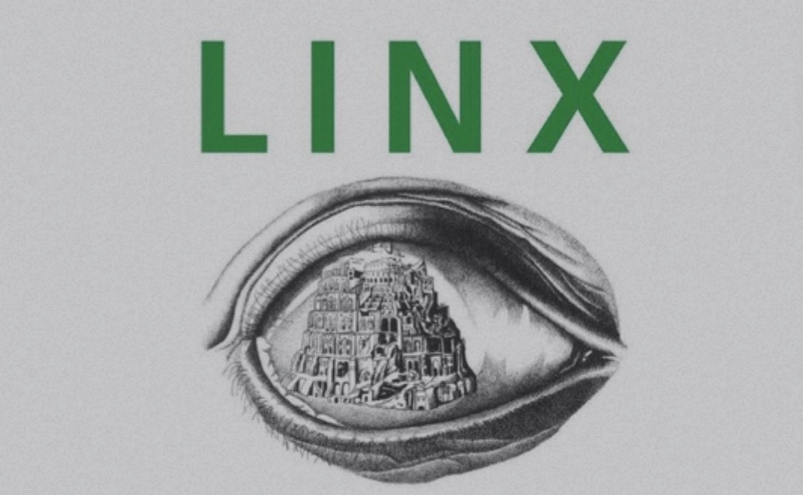

×
Journal (2024-2025)

Lexicography
This issue focuses exclusively on Asian computational lexicography. All articles will be published in English. For details, please see the journal page: https://computational-lexico.github.io/NPCLL_2026/publication.html
Guest Editors
CHEN Lian 陈恋
LLL, University of Orleans & CRLAO-CNRS-INALCO
lian.chen@univ-orleans.fr
GENG Yundong 耿云冬
School of Foreign Languages, Huazhong Agricultural University, China
benedict_geng@mail.hzau.edu.cn
×
Journal (2024-2025)
辞书研究 Lexicographical Studies
Following the PL & LTL international conference, we are inviting recommendations for guest papers to be translated and published in Chinese in this journal. Anyone interested in this topic is encouraged to contact us.
×
Journal (2024-2025)
Éla. Études de linguistique appliquée
Theme: Franco-Chinese lexicography (in honor of Jean PRUVOST and HUANG Jianhua)
At the invitation of Professor Jean Pruvost, this special issue of the journal Études de Linguistique Appliquée (ELA) is devoted to the topic of 'Franco-Chinese Lexicography.' It aims to explore the subject of French and Chinese lexicography in greater depth, particularly focusing on the exchanges and development of dictionaries between the two countries.
Axis 1: Metalexicography or Theoretical Lexicography
Axis 2: Applied Lexicography
Axis 3: Digital （Meta)Lexicography
Calendar:
Submission of articles: February 28, 2025
Feedback from experts: March 28, 2025
Submission of final articles: August 30, 2025
Publication: December 2025
×
Journal (2023-2025)

Linx Journal
Theme: Theoretical and Applied Phraseology in Languages
Issue edited by Lian Chen (Université d’Orléans, lian.chen@univ-orleans.fr), Huy-Linh Dao (INALCO-CNRS-EHESS, huy-linh.dao@inalco.fr), and Danh-Thành Do-Hurinvill (Université de Franche-Comté, danh_thanh.do-hurinville@univ-fcomte.fr).
Following the symposium "Phraseology in Theoretical and Applied Linguistics," held during the 20th AILA World Congress in Lyon (July 17-21, 2023), we plan to undertake the publication project resulting from this conference. Entitled "Theoretical and Applied Phraseology in Languages," it aims to deepen the topics discussed during the symposium.